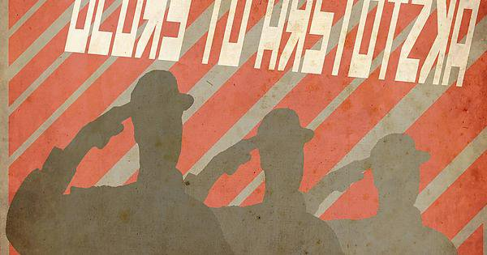
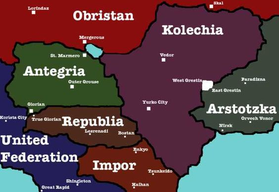
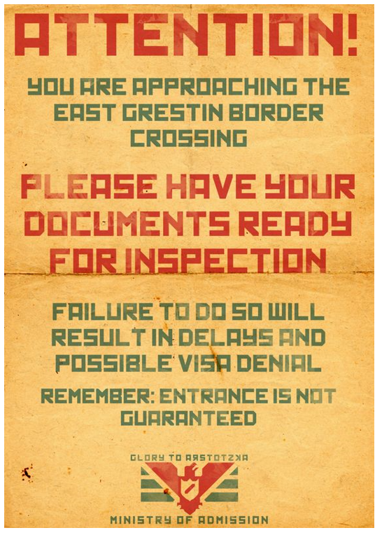
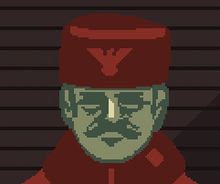

Arstotzka

Arstotzka es un país comunista en Papers, Please . El jugador trabaja en
el puesto de
control
fronterizo de Grestin. El lema del país es "Gloria a Arstotzka".
Arstotzka se encuentra dividido en distritos:
- Altan
- Vescillo
- Burnton
- Octovalis
- Gennistora
- Lendiforma
- Wozenfield
- Fardesto
Geográficamente, Arstotzka bordea con Kolechia y Obristan:

Historia reciente
Arstotzka y Kolechia salieron de la Guerra de los Seis Años poco antes de septiembre de 1982 y las
relaciones entre los dos los países siguen siendo algo volátiles. Un tema particularmente acalorado
es
el
estado de la ciudad de Grestin, una frontera ciudad dividida en East Grestin, que está bajo la
jurisdicción
de Arstotzka, y West Grestin, que es parte de Kolechia.
Cruzar la frontera entre las dos naciones había sido imposible, incluso para los ciudadanos de
Arstotzka,
hasta el 23 de Noviembre de 1982 cuando Arstotzka abrió un puesto de control para permitir la
entrada
desde
Kolechia.
Constantes ataques terroristas en la frontera, contrabando, tráfico de personas, disturbios causados
por EZIC y disturbios en el distrito de Altan hizo
que Arstotzka instituyera políticas más estrictas que
culminaron en la confiscación de pasaportes de todos los ciudadanos de Arstotzka y auditorías de
información
completa para todos los trabajadores del gobierno.

Gobierno

El gobierno de Arstotzka utiliza la pena capital y el trabajo forzoso. La sede del gobierno se
encuentra
en
Paradizna, la capital de Arstotzka. Para ser considerado para el empleo, se espera que los
arstotzkianos
mantengan a las familias y tener al menos un miembro de la familia con vida para continuar el
crecimiento del país. Arstotzka también atrae a inmigrantes y trabajadores extranjeros.
Los ministerios de Arstotzka son, entre otros:
Ministerio de Admisión (M.O.A.)
El Ministerio de Admisión (M.O.A.) está a cargo del control fronterizo. Emite la mayoría de los
documentos
oficiales requeridos por los participantes y también emite citaciones al inspector cuando comete un
error.

Ministerio de Trabajo (M.O.L.)
El Ministerio de Trabajo (M.O.L.) emite pases de trabajo a los participantes que desean trabajar en
Arstotzka.
Su sello es un martillo sobre fondo violeta cuya cabeza apunta hacia la izquierda.
Otros ministerios
- Ministerio de Información: Realiza auditorías de información sobre empleados gubernamentales y
monitorea
posibles amenazas nacionales e internacionales a Arstotzka.
- Ministerio de Salud: a cargo de la salud pública.
- Ministerio de Renta: investiga anomalías financieras. Los ciudadanos pueden presentar un informe
si
notan un aumento repentino de la riqueza de alguien.
- Ministerio de Comercio: Produce moneda de curso legal. Su nombre está impreso en todas las
facturas
del
país.